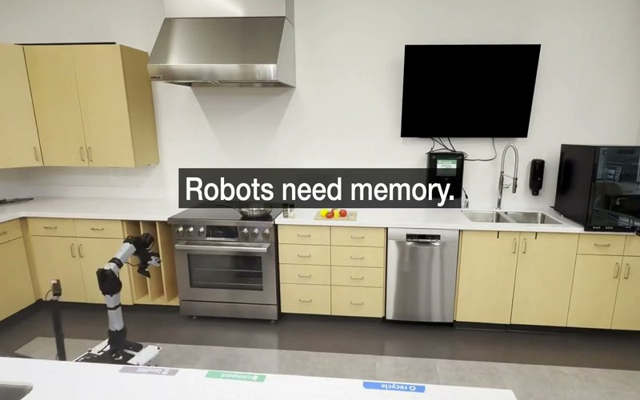
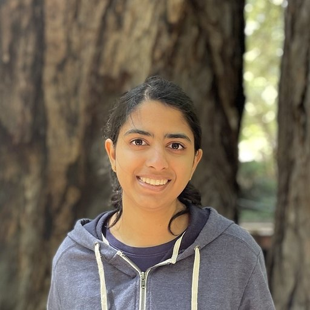
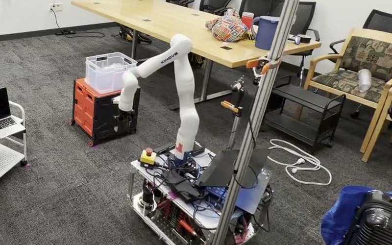
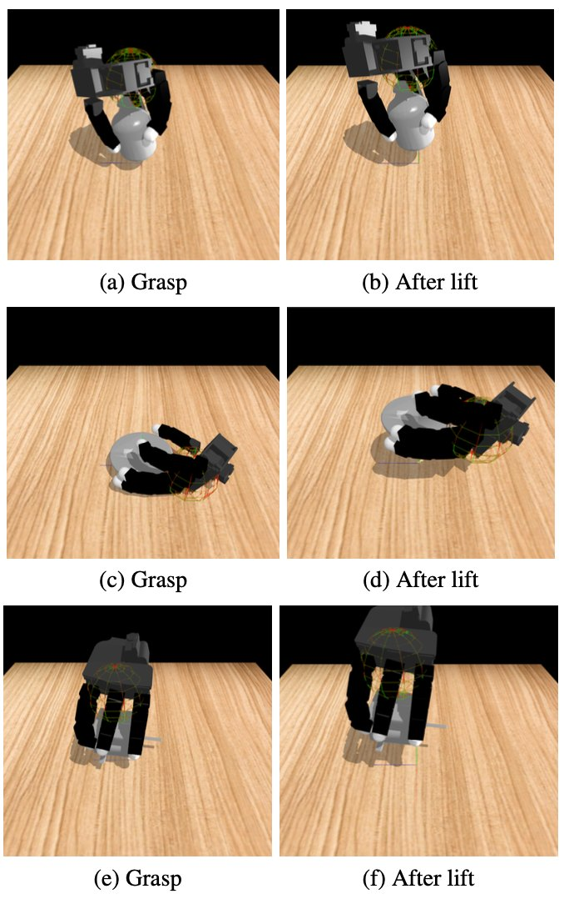
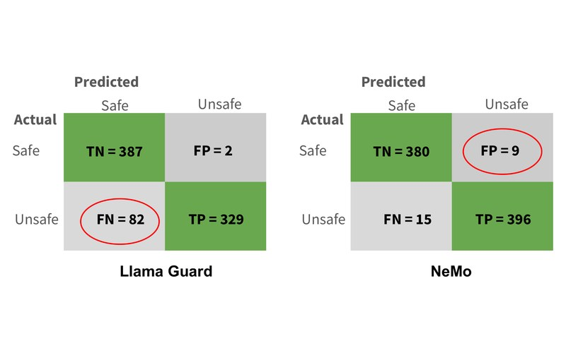
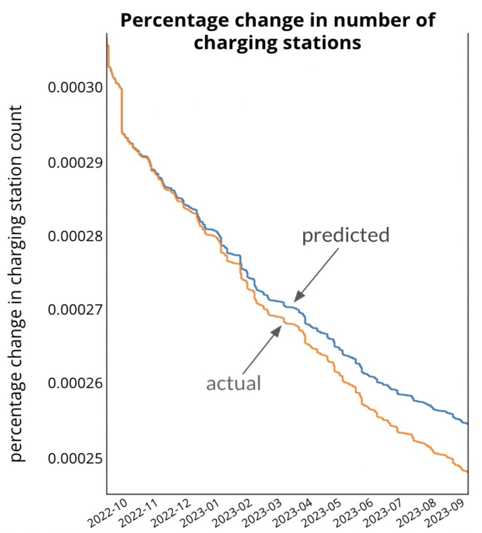
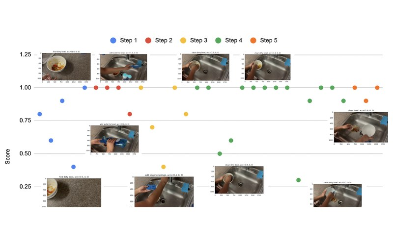

Conference on Robot Learning (CoRL), 2026 CoRL 2026

Stanford University
I am a researcher in robotics and embodied AI, working on long-horizon memory, 3D perception, and interaction-driven scene understanding for mobile manipulators: robots that improve with experience in a home rather than starting each task from scratch. I currently work in the Interactive Perception & Robot Learning Lab at Stanford, mentored by Professor Jeannette Bohg and Dr. Cherie Ho.
I graduated cum laude from Columbia University with a B.S. in Computer Science, where I worked on zero-shot evaluation of a robot's progress through long-horizon tasks under the guidance of Professor Shuran Song.






Developing a persistent, object-centric memory system linking RGB-D perception with adaptive task planning for mobile manipulators. Built a real-time scene graph that synchronizes perception, action, and memory, updating as the robot explores and interacts with its environment. Leveraged VLMs grounded with physical awareness to predict object affordances and choose appropriate motion primitives for interaction. Tested in MuJoCo/Isaac Sim and in real-world experiments with TidyBot.
Previously built a dexterous grasp evaluation pipeline using 3D Gaussian Splatting. Designed a custom VQ-VAE architecture to compress 3DGS into latent codes and trained a multi-headed evaluator predicting grasp success, collisions, and stability, achieving a 95.1% grasp success rate in simulation and surpassing BPS/NeRF baselines.
Built an emotion-aware conversational AI system combining ASR, prosodic features, and LLM reasoning to detect sudden emotion shifts from neutral or happy to sad or angry. Multimodal fusion of transcripts, audio embeddings, and dialogue context. Trained on 150+ IEMOCAP videos (~10 GB), improving accuracy from ~40% to 78%.
Led a team of four researchers to build a zero-shot learning framework that assesses step-by-step task execution for long-horizon tasks. The algorithm describes the predicted step outcome with an LLM, evaluates video data against the language outcome description with a VLM, and assesses incremental progress with a custom scoring metric. Achieved ~95% accuracy across diverse household and kitchen tasks; first-author publication at ICRCV 2023.
Built vector autoregression models to forecast EV adoption using policy incentives and charging infrastructure data. Produced a first-author publication at ITISE 2024.
Designed a NeRF-inspired model that learns robot kinematics from single-view video by predicting occupancy from 3D coordinates and joint angles. Used PyBullet-derived camera intrinsics to reconstruct 3D geometry from 2D single-view data.